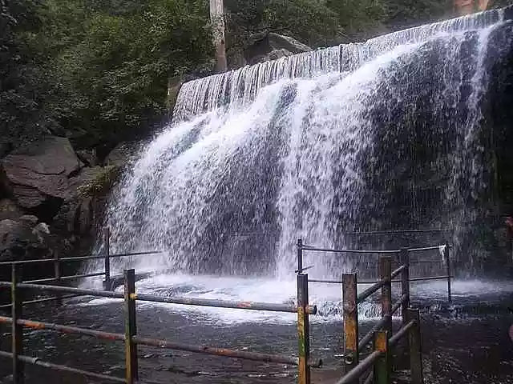

 Located in the southern part of India, Theni is a charming destination known for its scenic landscapes and natural beauty. Surrounded by the Western Ghats, Theni offers a peaceful escape with its lush greenery, picturesque hills, and vibrant tea plantations. Popular tourist spots include the lush landscapes of Munnar, the serene Suruli Waterfalls, and the stunning Meghamalai Hills. Visitors can enjoy activities like trekking, nature walks, and wildlife spotting, making Theni an ideal destination for nature lovers and adventure enthusiasts alike. The town's serene atmosphere and rich flora make it a hidden gem in Tamil Nadu.